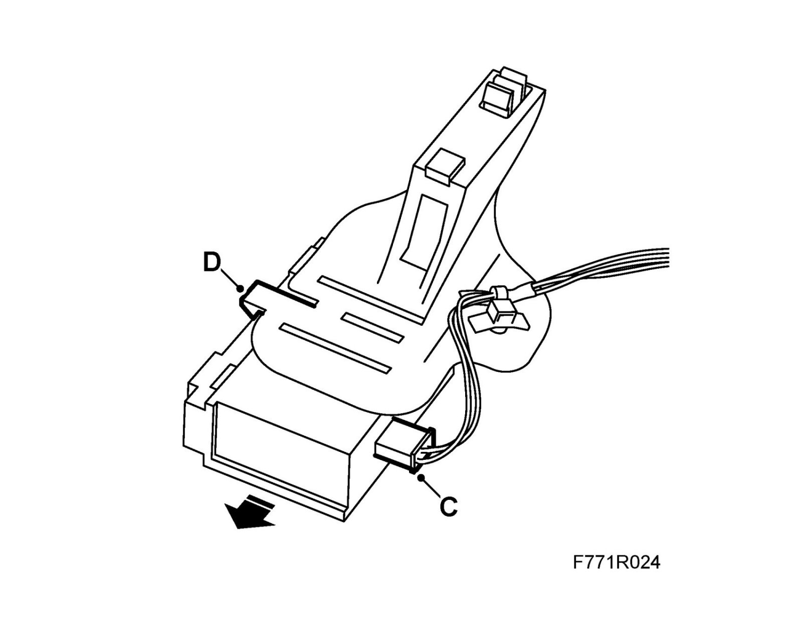
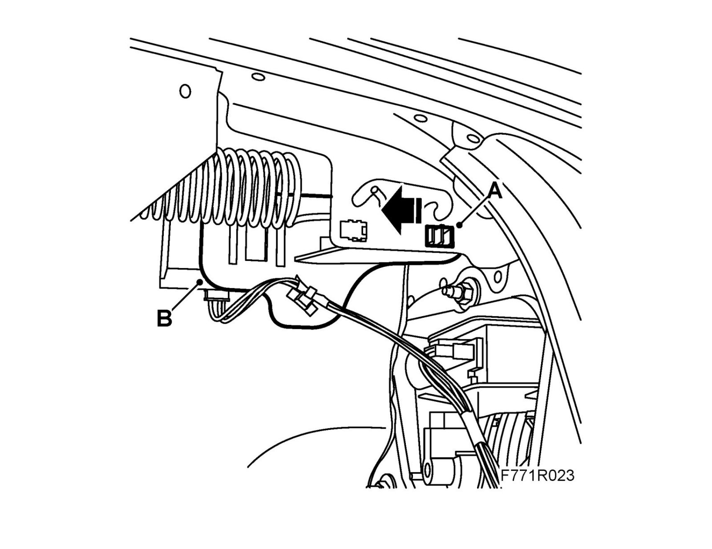
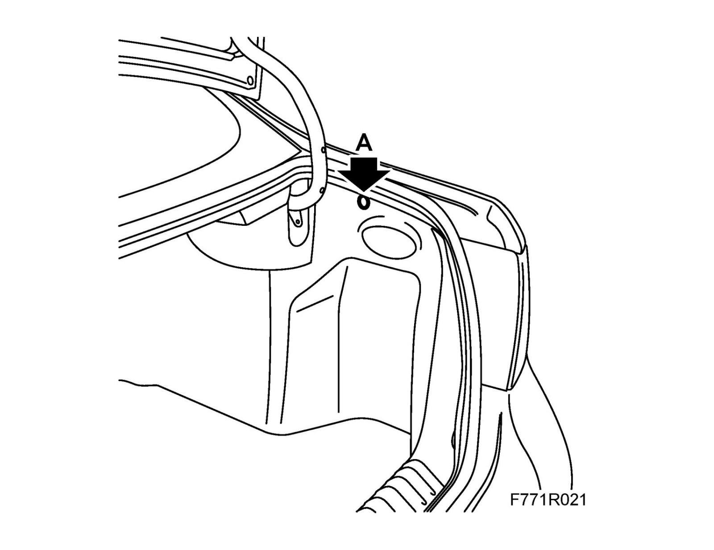

Control Module, Tire Pressure (753), 4D
Control module, tire pressure (753), 4DTo remove
1. Carry out Procedure before control module removal.
2. Open boot lid.
3. Remove the clip (A) and fold down the inspection hatch.

4. Remove the control module.
- Press in the lock lugs (A) and detach the bracket (B) by pulling it rearward.
- Detach the connector housing (C) by pulling it straight out.
- Detach the bracket from the control module by prying aside the lock lugs (D) and release the control module from the bracket by pulling it downward.

To fit
1. Fit the control module.
- Fit the bracket to the control module by pulling the control module until the lock lugs (D) engage.
- Attach the connector housing (C).
- Fit the bracket in its recess by pulling the bracket (B) forward until its lock lugs (A) engage.

2. Raise the inspection hatch and fit the clip (A) in the top edge.

3. Close the boot lid.
4. Carry out Procedure after control module replacement.